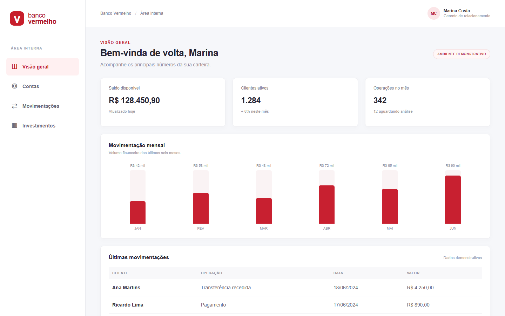
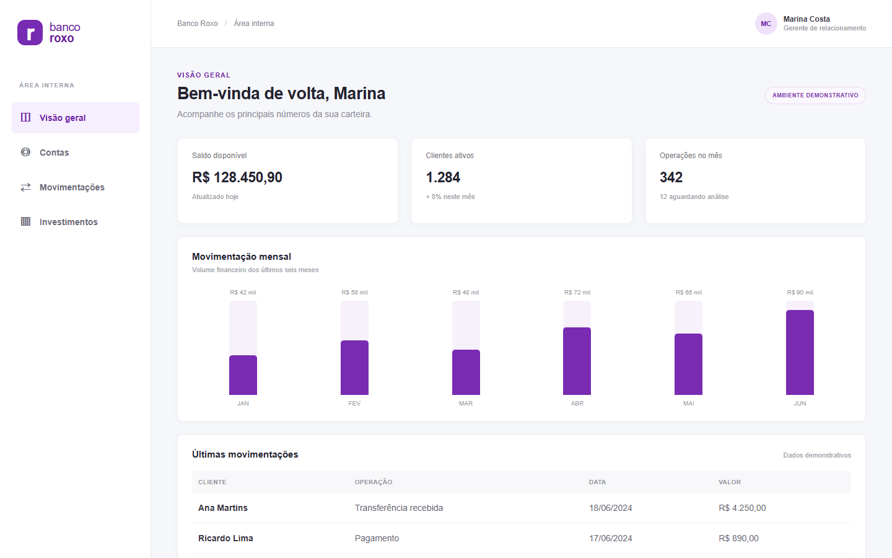
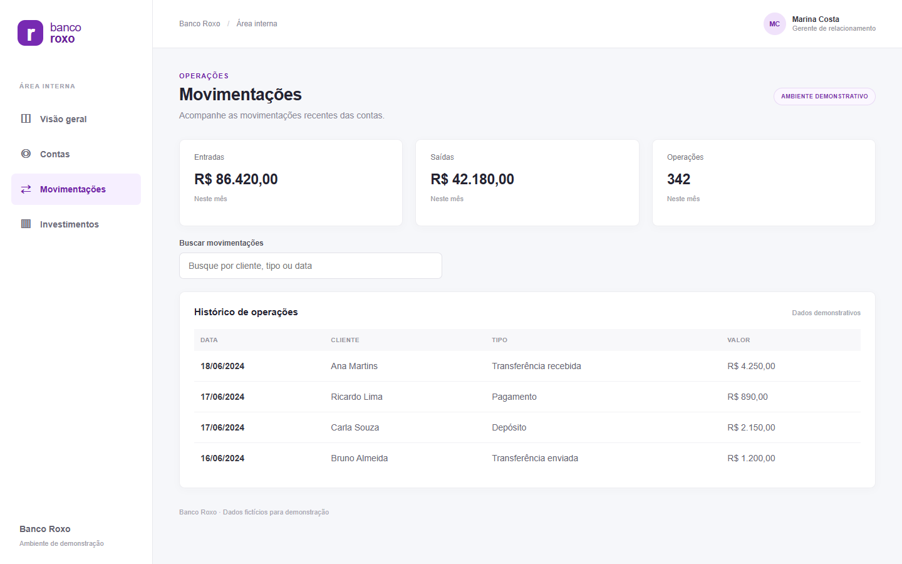

Uma base que funciona
O sistema interno legado atendia às operações do banco, mas concentrava as páginas em um mesmo layout e dependia de resolvers que atrasavam a navegação.
Um estudo de caso fictício · Banco Vermelho → Banco Roxo
Uma nova identidade. Uma nova arquitetura. E uma transformação feita passo a passo, sem deixar o banco parar.
01 / O contexto
O Banco Vermelho queria crescer. Para acompanhar novas ideias, precisava de uma identidade renovada e de uma plataforma capaz de evoluir junto com seus times.
O sistema interno legado atendia às operações do banco, mas concentrava as páginas em um mesmo layout e dependia de resolvers que atrasavam a navegação.
O Banco Vermelho passou por uma repaginação e se tornou Banco Roxo. A mudança também abriu espaço para expandir as ferramentas da empresa.
Em vez de substituir tudo de uma vez, a empresa escolheu migrar por etapas, preservando as ferramentas existentes enquanto as novas ficavam prontas.
Antes & depois
Capturas reais das aplicações demonstrativas: a experiência conhecida ganha uma nova identidade e uma nova base tecnológica.

Um sistema único, com páginas montadas dinamicamente por um layout compartilhado.

Uma interface familiar, agora moderna e composta por páginas independentes.
02 / A jornada
A migração acompanha o ritmo do negócio: cada etapa mantém o acesso às funcionalidades enquanto a próxima é construída.
O ponto de partida
O Banco Vermelho reúne quatro páginas em uma aplicação Angular 7.
Ver projeto legado no GitHub ↗Uma estrutura compartilhada. Um único layout monta as páginas e os resolvers simulam uma espera de três segundos antes de exibir os dados.
A transição
O Banco Roxo chega primeiro à visão geral e às contas. As demais ferramentas continuam funcionando no legado.
Ver projeto intermediário no GitHub ↗Duas aplicações, uma jornada. A navegação por URL conecta Angular 22 e Angular 7. Nesta etapa, cada aplicação mantém seu próprio runtime.
A evolução
As quatro páginas são recriadas em Angular moderno e passam a ser carregadas como microfrontends.
Ver projeto novo no GitHub ↗Uma base para crescer. Module Federation com Vite permite compor os remotos no shell e compartilhar o runtime Angular compatível.

O melhor dos dois momentos
A identidade visual é renovada antes de toda a tecnologia ser substituída. Enquanto contas já vive no sistema moderno, movimentações e investimentos permanecem no legado até sua migração.
03 / A arquitetura
Com microfrontends, cada time pode cuidar de uma ferramenta e evoluí-la de forma independente, dentro de uma experiência integrada.
O panorama das operações, em um só lugar.
A carteira de clientes e suas informações.
O acompanhamento das operações do banco.
Uma visão clara da carteira de investimentos.
Um shell conecta as ferramentas. Cada página é um remoto federado, carregado quando necessário.
A transformação continua
Este exemplo é fictício e usa dados demonstrativos. Explore as decisões e os detalhes técnicos de cada etapa no repositório.